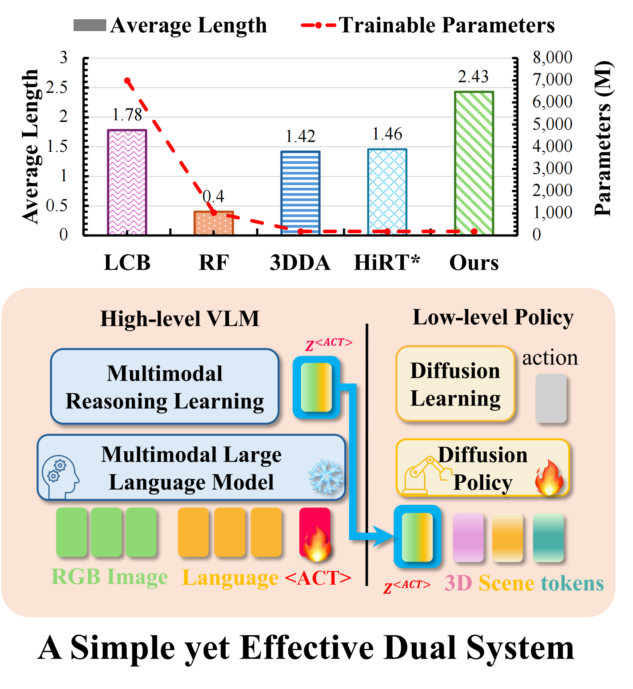
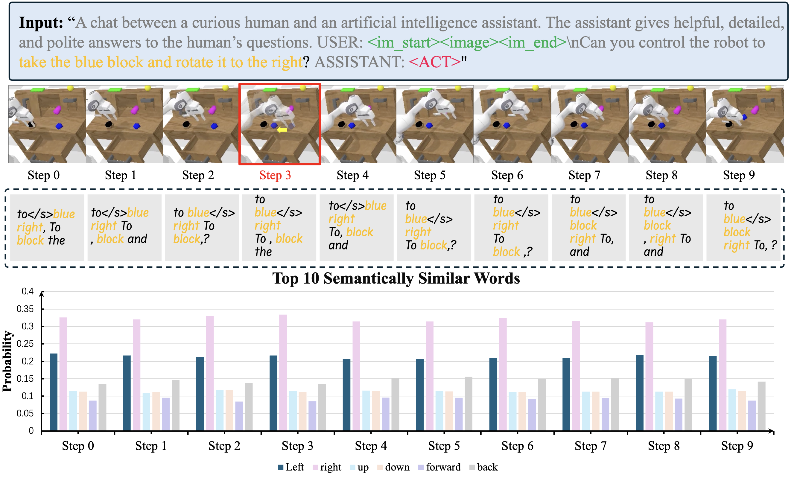
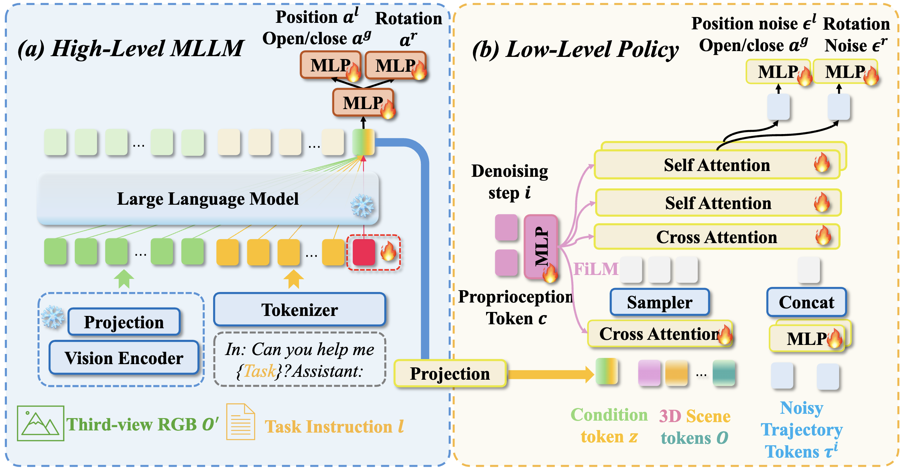
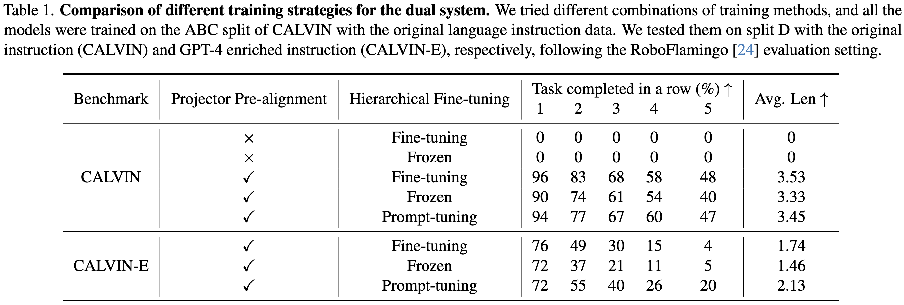
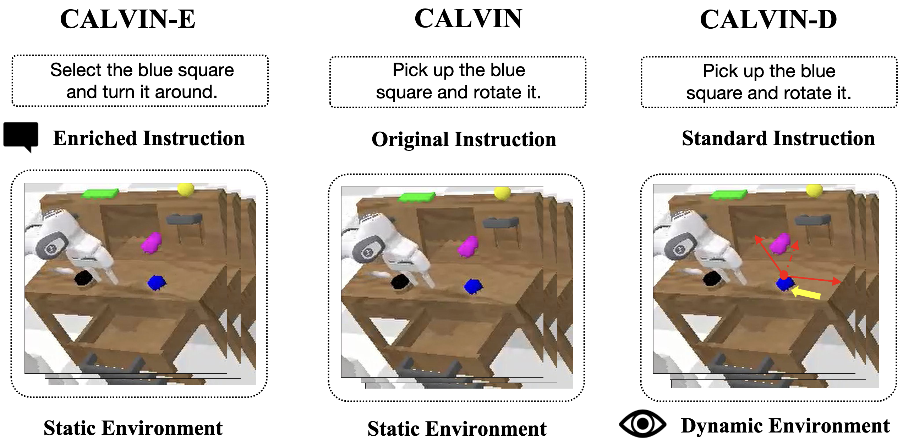
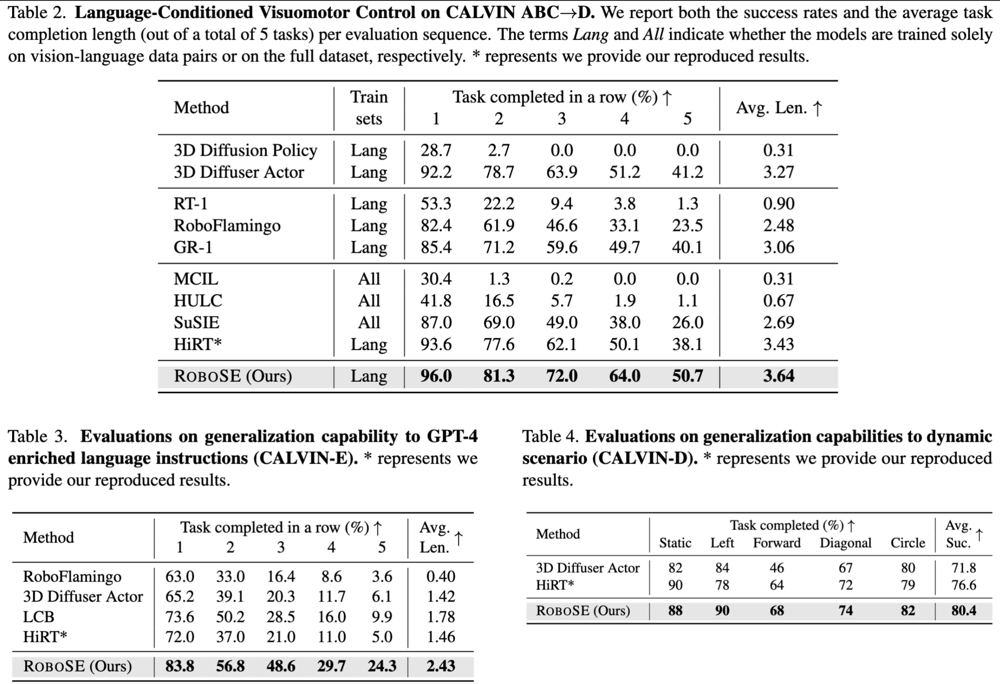

Can Cui, Pengxiang Ding*, Wenxuan Song, Hangyu Liu, Yang Liu,
Bofang Jia, Han Zhao, Siteng Huang, Zhaoxin Fan, Donglin Wang†
MiLAB, Westlake University
*Project lead | †Corresponding author
Under Review
ROBOSE proposes a simple yet effective dual system for robot learning by hierarchically integrating a high-level Multimodal Large Language Model (MLLM) with a low-level policy model. Through pre-alignment, prompt tuning, and multimodal reasoning learning, ROBOSE significantly enhances generalization, reduces training cost, and achieves state-of-the-art results on challenging robot manipulation benchmarks such as CALVIN and CALVIN-D.

The results show that the current MLLM is insensitive to environmental changes, which is unexpected. Analysis of action token embeddings reveals that they mainly reflect instruction semantics, with little adaptation to visual input. For example, “right” consistently has a higher similarity than “left,” regardless of actual motion. This suggests the MLLM does not effectively leverage visual reasoning and instead passes static instruction semantics to the policy. Thus, current dual-system designs are flawed, as the MLLM’s visual guidance is not meaningfully transferred to the action policy—raising the question of whether a single LLM could achieve similar performance.

ROBOSE bridges the high-level MLLM and the low-level policy using a learned

We tried different combinations of training methods, and all the models were trained on the ABC split of CALVIN with the original language instruction data. We tested them on split D with the original instruction (CALVIN) and GPT-4 enriched instruction (CALVIN-E), respectively, following the RoboFlamingo \cite{li2023vision} evaluation setting.

We construct CALVIN-D, an enhanced benchmark built upon CALVIN, introducing five dynamic object movement patterns. This setup evaluates models' capability to generalize in real-time environments.

ROBOSE outperforms previous methods across all metrics in CALVIN, CALVIN-E (language generalization), and CALVIN-D (dynamic vision generalization). It achieves better success rates with fewer parameters and less training data, validating its data efficiency and robustness.

@article{Cui2024ROBOSE,
title={ROBOSE: A Simple yet Effective Dual System for Robot Learning},
author={Can Cui and Pengxiang Ding and Wenxuan Song and Hangyu Liu and Yang Liu and Bofang Jia and Han Zhao and Siteng Huang and Zhaoxin Fan and Donglin Wang},
journal={arXiv preprint arXiv:2403.13358},
year={2024}
}Website template borrowed from Jon Barron.